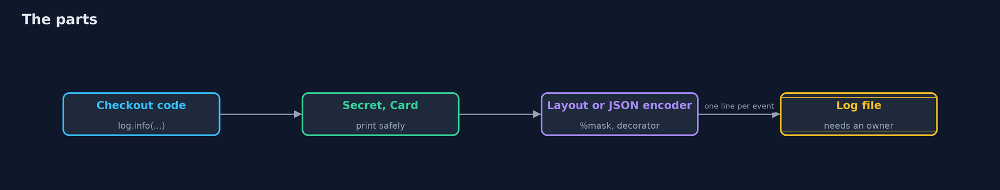
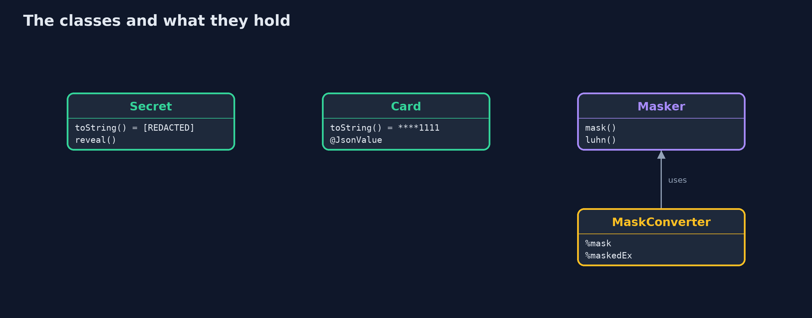
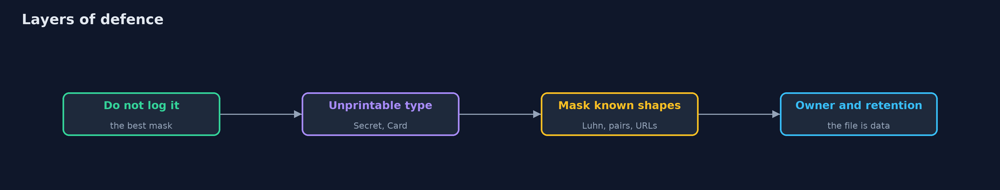
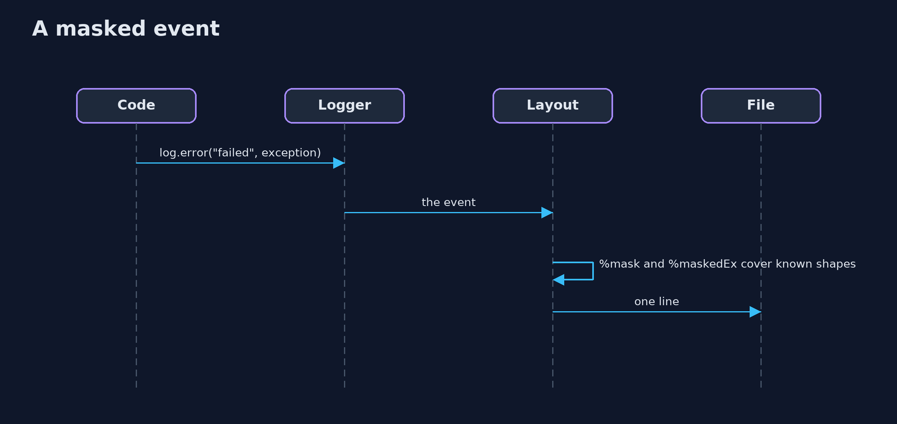

Secrets in Logs with Logback
src/main/java/com/jk/explore/security/logging/
├── Card.java A card number that prints as its last four digits, in a string and in JSON
├── CheckoutRequest.java What the checkout page posts, with the sensitive parts in types that cannot be printed by accident
├── LogSetup.java One Logback logger writing into memory, configured in code: a layout, or JSON
├── LoggingDemo.java The events of the lesson, written the careless way: whatever is at hand goes into the message
├── MaskConverter.java %mask: the formatted message on one line, with the shapes of secrets covered
├── MaskedThrowableConverter.java %maskedEx: " | " and the exception and its causes, class and message only, with the shapes of secrets covered; no frames, so no code layout either
├── Masker.java Finds the shapes of secrets in text that was already written, and covers them
├── PlainCard.java The same card without the care: a record, whose JSON form is its components
└── Secret.java A value that is never printed: logging it, or putting it in a message or a string, shows a marker
**With Logback 1.6 and logstash-logback-encoder 9 a careless message puts the card, the cvv, the token and the database password in the file and lets a line break forge a second event; a masking layout and a masking JSON decorator cover the shapes they know (a card only if it passes Luhn), types that print as [REDACTED] or **1111 need no masking at all, JSON keeps one event on one line, but a record is written as its fields, a mask never covers a shape it has not seen, and the log file stays data that needs an owner.
The plain secrets-in-errors-and-logs project writes its own redactor and its own logger. This one uses Logback 1.6 and logstash-logback-encoder 9 (JSON events, masking), configured in code, writing into memory so that the output can be compared. It needs no server and no tool beyond Gradle; the demo takes a couple of seconds.
What it shows:
- What the log keeps. A careless message: the card, the cvv and the token in a map, the database password in an exception message, and a customer name with a line break that forges a second event (4 lines from 3 events).
- Covering shapes in the layout. A %mask conversion word and a %maskedEx word (class and message of the exception and its causes, no frames). A card is covered only if it passes the Luhn check, so a 16-digit order number is left alone; the line break becomes \n.
- Make the secret unprintable. Secret prints [REDACTED], Card prints ****1111, a CheckoutRequest record made of them prints safely under a plain layout. An exception from a library is logged by class, with a reference.
- Structured logs. JSON events keep a line break inside one line; a record is written as its fields, not its toString (PlainCard leaks number, Card with @JsonValue does not); path masks and a value masker cover the rest.
- The bill. A pin, a code word and an SSN in free text are in shapes nobody listed; a log file needs an owner, a retention and a level.
Maps to: OWASP Top 10 (2025) A09 Security Logging and Alerting Failures · CWE-532 (sensitive information in a log file), CWE-209, CWE-117 (improper output neutralization for logs).
The idea in everyday terms
A shop's till roll. If it prints the whole card number, anyone who finds the roll in the bin has it. A till that cannot print the number, because the number never reaches the printer, is safer than a till with a person who blacks out what they recognise.
The scenario
An online store logs its checkout. The demo writes the same three events four ways and reads what each way leaves in the file.
Run
./gradlew run
The demo tells the story in 5 acts, each printing exact numbers that the tests check:
| Act | What it shows |
|---|---|
| 1. What the log keeps | A careless message puts the card, the cvv, the token and the database password in the file, and a line break forges a second event. |
| 2. Covering the shapes of secrets in the layout | A %mask conversion word and a %maskedEx word cover what they recognise; a card only if it passes Luhn; a line break becomes \n. |
| 3. Make the secret unprintable | Types that print as [REDACTED] and ****1111 need no mask at all, and a library's exception is logged by class with a reference. |
| 4. Structured logs | JSON events keep a line break inside one line; a record is written as its fields; path masks and a value masker cover the rest. |
| 5. The bill | A pin, a code word and an SSN in free text are in shapes nobody listed; the file needs an owner, a retention and a level. |
Test
./gradlew test
12 tests in DemoRunsTest, LoggingTest. The tests run the real Logback and need no other tool.
What the simulation got right, and what it left out
Logback and the Logstash encoder are the real libraries; each case has a logger context of its own that writes into memory. Times and thread names are left out of the lines so that the output is the same on every run.
Technologies and versions
Every version below is pinned in the project's build files and was the latest stable release when the project was built.
| Technology | Version | Used for |
|---|---|---|
| Java | 25 | the language and runtime; a Gradle toolchain finds or downloads the JDK |
| Gradle | 9.8.1 (wrapper) | build and run; nothing to install, the wrapper downloads it |
| ch.qos.logback:logback-classic | 1.6.5 | library the code uses |
| net.logstash.logback:logstash-logback-encoder | 9.0 | library the code uses |
| org.junit.jupiter:junit-jupiter | 6.1.3, set by junit-bom | JUnit 5: the tests (tests only) |
| org.junit.platform:junit-platform-launcher | 6.1.3, set by junit-bom | JUnit platform launcher, which Gradle needs to run the tests (tests only) |
| videokit | repository tool (tools/videokit) |
the narrated video and animation: Piper en_US-amy-medium, speed 0.8, longer pauses (the amy-slow voice) |
Learning Material
| Document | What it is for |
|---|---|
| Problem statement | the situation and what the project must show |
| Prerequisites | what you need to know first |
| Secrets in Logs with Logback, explained | the acts in prose |
| Session guide | a one-hour lesson with exercises |
| Animated walkthrough | the acts step by step, narrated |
| Threat model | what is protected, who could harm it, and how, using STRIDE |
| Spec | what this project must be true of |
| Expected output | the golden demo output every test and every port checks against |
The idea in one picture
Events pass types, a layout or an encoder, and a mask, on the way to the file.

Where each piece sits
Types that print safely, a masker, and two converters.

How the data moves
From never logging it, to covering what is left.

Who calls whom, in order

Video
video/secrets-in-errors-and-logs-with-logback-explained.mp4 (with .m4a audio and .srt subtitles) is built by video/build_video.sh. Rendered media is not committed.
What it costs
- A mask is a guess about shapes, and secrets arrive in shapes nobody listed.
- Types that cannot print need discipline, and a library's own exception message is outside them.
- JSON logs need a pipeline that reads JSON.
- Records and beans are written as fields, which is not what their toString says.
- Every log line is retained data: it needs an owner and an end date.
When this is too much
A throwaway script that nobody else reads does not need structured logging or masking. Add them when logs leave the machine: to a file others can read, to a central service, to a vendor.
Where you have already met this
logback.xmlwith a pattern and a rolling file.- A
toString()generated by an IDE that prints every field. - A log line that says "user=... password=..." from a debugging session.
- A log search that shows a stranger's name.
Where this sits
This is the tools version of secrets-in-errors-and-logs, in the secure-coding module. Where such logs are shipped and searched is the subject of security-logging-with-loki-and-grafana.